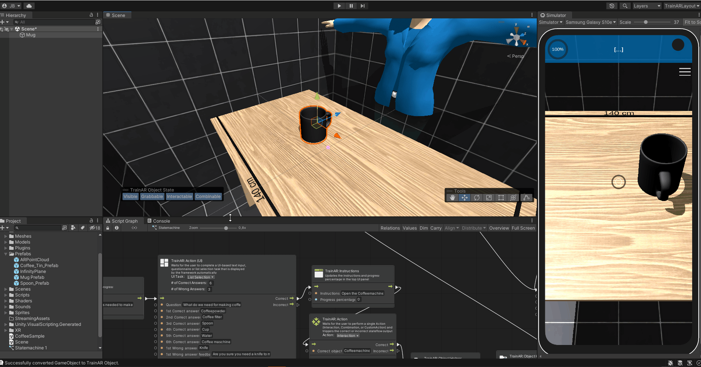

Create and Configure TrainAR Objects
To be able to use your assets for interactions in TrainAR, you need to convert them to TrainAR Objects first.
To convert an object into an TrainAR Object simply drag-and-drop it from the project tab into the hierarchy tab. Then right click on it in the hierarchy tab and select Convert to TrainAR Object.
If the asset you're trying to convert is packed as a prefab, you'll also have to unpack it.

Note: An object may only be converted to a TrainAR Object, if it has a transform, MeshFilter and a MeshRenderer applied to it.
TrainAR Object States
A TrainAR Object has certain state attribute with which you can control in which kinds of ways the object can be interacted with. These states are:
Visible: Whether or not this TrainAR Object is visible.
Grabbable: If this is enabled, objects may be grabbed and moved around. Therefore this should be disabled, in case of stationary objects.
Interactable: Whether or not it is possible to trigger interactions on this object.
Combineable: Whether or not it is possible to trigger combines on this object.
If you have selected an TrainAR Object in the Authoring Tool, you can toggle these states by clicking on them in the Object State Toolbar.

Tool bar
With the Tools bar you can configure your TrainAR Objects further. For example, you can move, rotate and scale objects.
The Transform tool is a combination of the previous tools.

With the Bounding Box Tool you can configure the bounding box of the object, which among other things, defines at what point TrainAR Objects are overlapping, so they can be combined with each other.
Holding alt and clicking pins the center in place and clicking shift makes it possible to scale the bounding box uniformly.